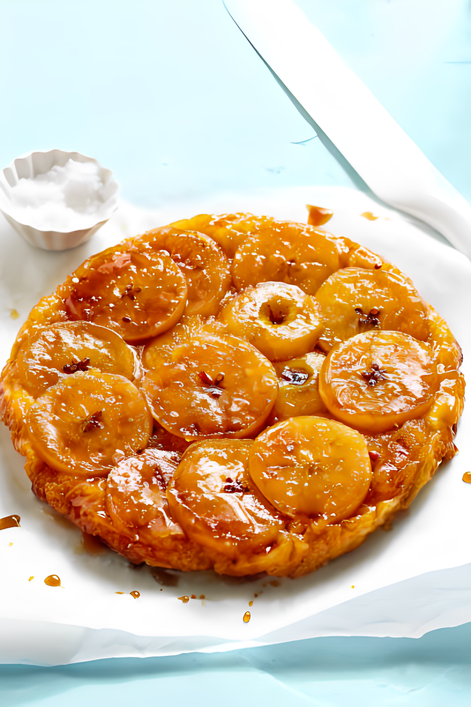

Tarte Tatin is a classic French upside-down caramelized apple tart. It's a delicious and impressive
dessert that's surprisingly simple to make.
Ingredients
For the Pastry (you can also use store-bought puff pastry)
1 1/4 cups all-purpose flour
1/2 cup unsalted butter, chilled and cut into small pieces
1/4 cup granulated sugar
1/4 teaspoon salt
2-3 tablespoons ice water
For the Tatin
6-8 medium-sized apples (such as Granny Smith), peeled, cored, and halved
1 cup granulated sugar
1/2 cup unsalted butter
1 teaspoon lemon juice

Instructions
1.For the Pastry
In a food processor, combine the flour, sugar, and salt. Add the chilled butter and pulse until the
mixture resembles coarse crumbs.
Add ice water, one tablespoon at a time, and pulse until the dough comes together. Be careful not to
overmix.
Turn the dough out onto a floured surface, shape it into a disk, wrap it in plastic wrap, and
refrigerate for at least 30 minutes.
2.For the Tatin
Preheat the oven to 375°F (190°C).
In a 9 or 10-inch ovenproof skillet or Tatin dish, melt the butter over medium heat. Add the sugar and
cook, stirring occasionally, until the sugar caramelizes and turns golden brown.
Remove the skillet from heat and arrange the apple halves, rounded side down, in a circular pattern over
the caramel.
Sprinkle lemon juice over the apples.
Roll out the chilled pastry on a floured surface to fit the size of your skillet. Place the pastry over
the apples, tucking the edges down the sides of the skillet.
Bake in the preheated oven for 25-30 minutes or until the pastry is golden brown and crisp.
Allow the Tarte Tatin to cool in the skillet for about 10 minutes.
Place a serving platter over the skillet, and carefully invert the tart onto the platter.
Serve the Tarte Tatin warm, either on its own or with a scoop of vanilla ice cream.